1 · 半透明导航栏(玻璃质感)+ 白色 logo
logo 改成纯白线条版(椭圆描边 + 白色 SK)。导航栏是半透明蓝色加背景模糊:在顶部能透出下面的厂房照片;滚到白色内容上时,背景会自动变深一点(下图右侧),保证文字看得清。

SUKE
Acrylic Sheet Manufacturer
页面顶部:半透明,透出下面的厂房照片
SUKE
Acrylic Sheet Manufacturer
2 · 页脚方案 F1 — 墨蓝 + 水印 logo
单色近黑蓝底,顶部一条金色渐隐细线,左上角一点柔和的蓝光,右侧放一个大号的、几乎看不见的 logo 水印。克制、安静,最接近你说的高级感。
Nanjing Suke Photoelectric Technology Co., Ltd. Extruded PMMA, PC and PS sheets for LED backlighting, lighting and display.
Factory
No. 8 Jielin Road, Huatang Community, Lulang Town, Jiangning District, Nanjing, Jiangsu Province, China
in
© 2026 SUKE Acrylic. All Rights Reserved.Designed by Didi
3 · 页脚方案 F2 — 毛玻璃面板压在厂房照片上
页脚背景用厂房照片(压深),信息放在一块半透明毛玻璃面板里,和顶部半透明导航栏呼应,整站前后风格统一。
Nanjing Suke Photoelectric Technology Co., Ltd. Extruded PMMA, PC and PS sheets.
Factory
No. 8 Jielin Road, Huatang Community, Lulang Town, Jiangning District, Nanjing, Jiangsu Province, China
in
© 2026 SUKE Acrylic. All Rights Reserved.Designed by Didi
4 · 页脚方案 F3 — 顶部询价横条 + 导航链接栏
页脚上方加一条询价横条("Ready to discuss your order?"+ 金色按钮),下面是深色页脚,多了产品和页面快捷链接栏,更像成熟的企业站,也方便客户直接跳转。
Ready to discuss your order?
Send us your specifications and we'll reply with a quotation.
Get a Quote →
Nanjing Suke Photoelectric Technology Co., Ltd. Extruded PMMA, PC and PS sheets.
Contact
sales@suke-acrylic.com+61 0411984116
+86 15365087585
No. 8 Jielin Road, Lulang Town, Jiangning District, Nanjing, China
© 2026 SUKE Acrylic. All Rights Reserved.Designed by Didi